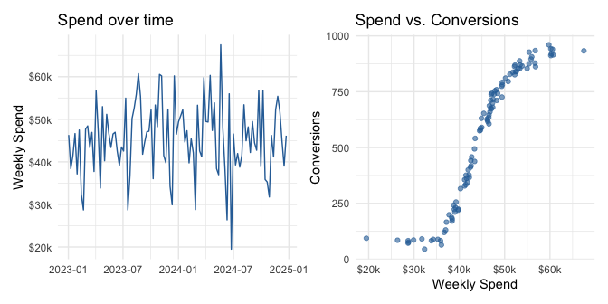
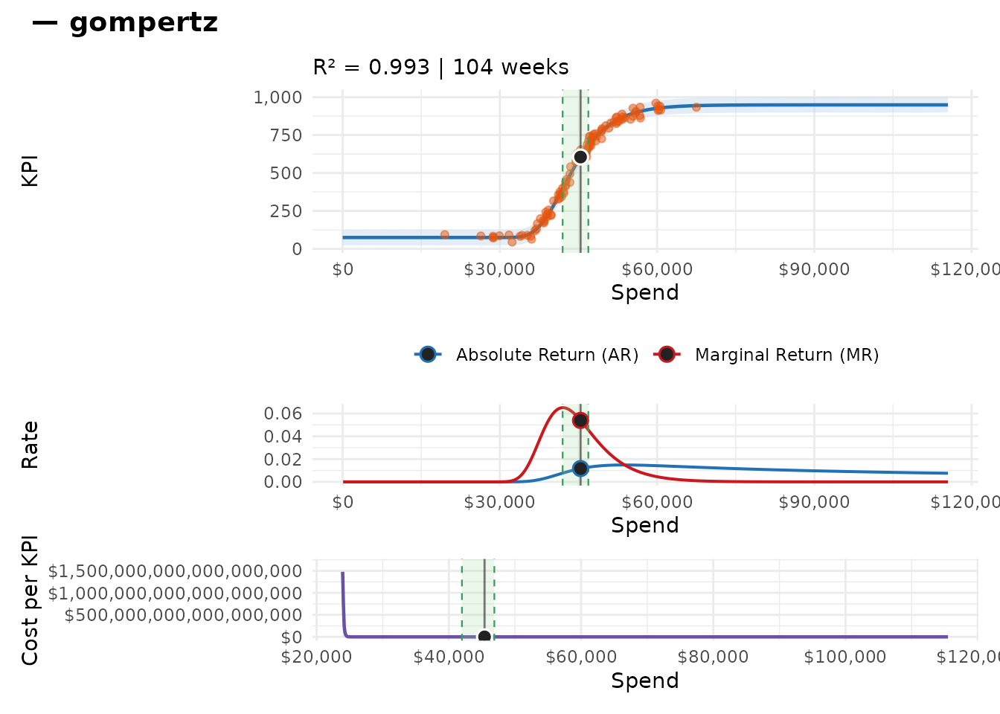
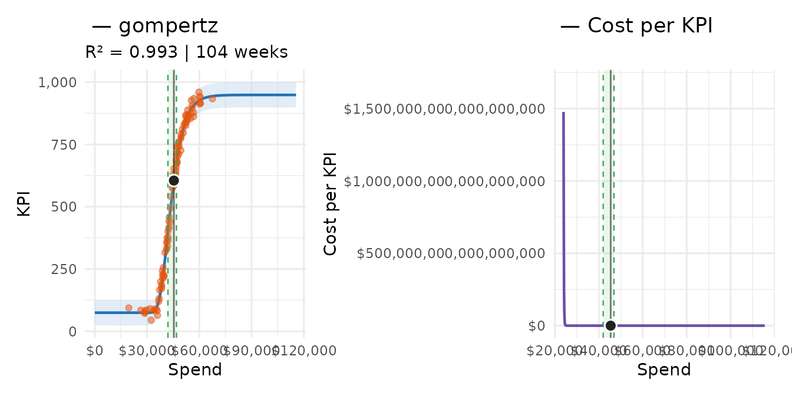
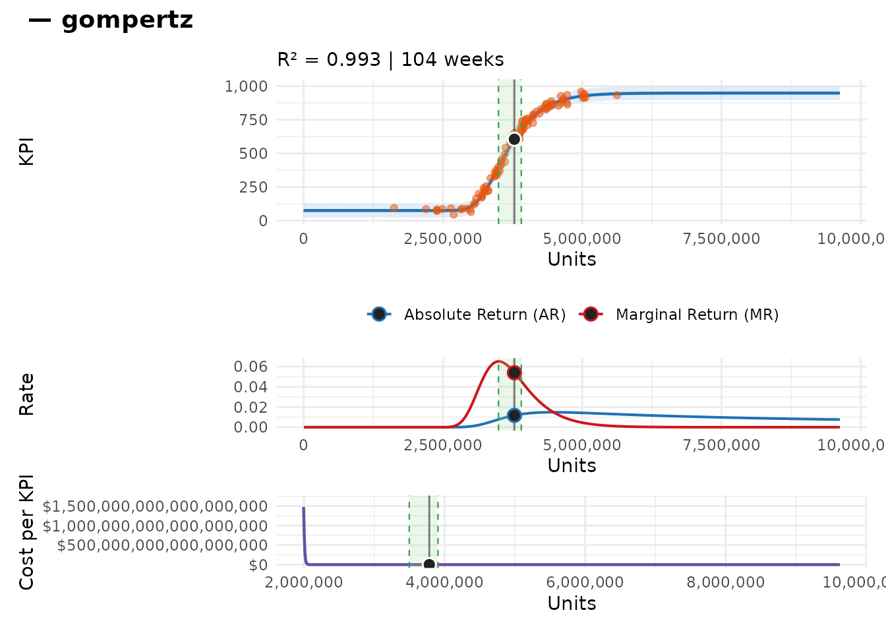

Fitting and Analyzing Response Curve Models
fitting_and_analysis.RmdOverview
This vignette walks through the full fitting and analysis workflow for a single channel, then shows how to extend it to a multi-channel portfolio. It assumes familiarity with the response curve theory covered in the Response Curve Theory and Data Requirements vignette.
What this vignette covers:
- Preparing data and understanding the
fit_response()API - Reading and interpreting model output
- Visualising response curves, returns, and cost-per metrics
- Custom inference beyond observed spend levels
- Incorporating media units (e.g., impressions)
- Specifying priors when the defaults need adjustment
- Fitting a full multi-channel model list
Diagnostics (trace plots, posterior predictive checks, R-hat) and model comparison across curve types are covered in the next vignette.
The Data
mrmopt ships with mrmopt_data, a simulated
dataset of five advertising channels over two years of weekly
observations.
data(mrmopt_data)
mrmopt_data
#> # A tibble: 520 × 4
#> channel week spend conversions
#> <fct> <date> <dbl> <int>
#> 1 Paid Search 2023-01-02 46306 616
#> 2 Paid Search 2023-01-09 38396 171
#> 3 Paid Search 2023-01-16 41434 334
#> 4 Paid Search 2023-01-23 46644 687
#> 5 Paid Search 2023-01-30 37157 166
#> 6 Paid Search 2023-02-06 47482 716
#> 7 Paid Search 2023-02-13 32331 45
#> 8 Paid Search 2023-02-20 28702 83
#> 9 Paid Search 2023-02-27 47682 739
#> 10 Paid Search 2023-03-06 48444 743
#> # ℹ 510 more rowsEach row is a channel-week observation with a spend amount and a conversion count. For the primary walkthrough we use Paid Search, which has a clean Gompertz-shaped response and no log-scale complications.
paid_search <- mrmopt_data |>
filter(channel == "Paid Search")Before fitting it is worth looking at the raw data: how much does spend vary, and does the scatter of spend vs. conversions suggest a saturating shape?
p_time <- ggplot(paid_search, aes(week, spend)) +
geom_line(colour = "#2d6fa6") +
scale_y_continuous(labels = scales::dollar_format(scale = 1e-3, suffix = "k")) +
labs(x = NULL, y = "Weekly Spend", title = "Spend over time") +
theme_minimal()
p_scatter <- ggplot(paid_search, aes(spend, conversions)) +
geom_point(alpha = 0.6, colour = "#2d6fa6") +
scale_x_continuous(labels = scales::dollar_format(scale = 1e-3, suffix = "k")) +
labs(x = "Weekly Spend", y = "Conversions", title = "Spend vs. Conversions") +
theme_minimal()
p_time + p_scatter
Left: Paid Search weekly spend over time. Right: spend vs. conversions scatter. Spend varies meaningfully and the scatter hints at a concave relationship — both good signs for curve fitting.
The scatter plot shows diminishing returns setting in — conversions level off at higher spend levels, consistent with a Gompertz or logistic shape.
A Minimal fit_response() Call
fit_response() is the entry point for model fitting. At
minimum it needs a data frame, the names of the spend and KPI columns,
the date column, and the curve type.
fit <- fit_response(
data = paid_search,
spend = "spend",
kpi = "conversions",
date = "week",
type = "gompertz",
chains = 2,
iter = 1000,
warmup = 500,
seed = 8214
)A note on the arguments:
-
type: the response curve family. See the theory vignette for guidance on choosing between the six options. -
auto = TRUE(the default):mrmoptscales the data to [0, 1] before fitting and sets sensible default priors automatically. This removes the need to specify priors by hand for most channels. -
anchor_strength = 0.05(the default viamrmopt_prior()): controls how tightly the floor parameter (c) is constrained near zero. The value is a fraction of the observed y range used as the prior SD. Smaller values produce narrower credible intervals at low spend. Set toNULLfor loose behavior if you believe the channel generates baseline conversions independent of paid spend. -
chains,iter,warmup: passed directly to Stan. The values above are reduced for illustration speed. For production fits, use the defaults (chains = 4, iter = 4000, warmup = 1000). -
units: an optional column of media units (impressions, clicks, GRPs). When supplied, cost-per-unit metrics are added throughout the output. Covered in the units section below.
Reading the Output
print()
Calling print(fit) — or just typing fit at
the console — displays a structured summary of the fitted model.
fit
#> -- Response Curve Summary: gompertz ------------------------------------------
#> Channel: spend
#> Weeks: 104
#> -- Current Performance -------------------------------------------------------
#> Weekly Spend: $45,395
#> KPI: 605 | CP: $77 | AR: 0.0117 | MR: 0.0539
#> -- Parameters ----------------------------------------------------------------
#> b (growth rate): -2.03e-04
#> c (floor): 75
#> d (ceiling): 949
#> e (midpoint): $41,970
#> -- Response Curve Summary ----------------------------------------------------
#> Min (peak MR): $41,976 -> KPI: 397 | CP: $106
#> Peak (peak AR): $53,797 -> KPI: 873 | CP: $62
#> Max (70% MR): $46,877 -> KPI: 678 | CP: $69
#>
#> 33.7% of weeks below range | 22.1% in range | 44.2% above range
#> -- Bayes R2 ------------------------------------------------------------------
#> R2: 0.9930 (95% CI: [0.9924, 0.9932])
#>
#> Use summary(x) for brms model diagnostics.The output has five sections:
Header — channel name (taken from the spend column), curve type, number of weeks in the training data.
-
Current Performance — metrics evaluated at the observed average weekly spend. This tells you where the channel is operating right now:
-
Weekly SpendandKPI: the average week. -
AR(Absolute Return): conversions per dollar of total spend — i.e., the average efficiency of the whole budget. -
MR(Marginal Return): conversions generated by the next dollar — i.e., the efficiency of incremental spend at the current level. -
CP(Cost per conversion): dollars spent per conversion.
-
Parameters — the four fitted curve parameters in original data units. Each parameter is shown with its posterior mean and 95% credible interval.
-
Response Curve Summary — three analytically important points on the curve, each reported with spend, KPI, AR, MR, and CP:
-
Range Min: spend at peak marginal return — the most efficient point to begin investing. Below this level, each additional dollar is more efficient than the last. -
Range Peak: spend at peak absolute return — the single most efficient total spend level. -
Range Max: spend where marginal return has decayed to 70% of its peak — the point where diminishing returns accelerate meaningfully. The%Wkscolumn shows what fraction of observed weeks fell below, within, and above this range.
-
Bayes R² — a posterior distribution over the proportion of variance in the KPI explained by the model. Higher is better; the credible interval reflects uncertainty about fit quality.
The underlying data for the summary is also accessible programmatically:
fit$summary
#> -- Response Curve Summary: gompertz ------------------------------------------
#> Channel: spend
#> Weeks: 104
#> -- Current Performance -------------------------------------------------------
#> Weekly Spend: $45,395
#> KPI: 605 | CP: $77 | AR: 0.0117 | MR: 0.0539
#> -- Parameters ----------------------------------------------------------------
#> b (growth rate): -2.03e-04
#> c (floor): 75
#> d (ceiling): 949
#> e (midpoint): $41,970
#> -- Response Curve Summary ----------------------------------------------------
#> Min (peak MR): $41,976 -> KPI: 397 | CP: $106
#> Peak (peak AR): $53,797 -> KPI: 873 | CP: $62
#> Max (70% MR): $46,877 -> KPI: 678 | CP: $69
#>
#> 33.7% of weeks below range | 22.1% in range | 44.2% above range
#> -- Bayes R2 ------------------------------------------------------------------
#> R2: 0.9930 (95% CI: [0.9924, 0.9932])
mrm_params()
For a focused view of the four curve parameters with plain-language
descriptions, use mrm_params():
mrm_params(fit)
#> # A tibble: 4 × 6
#> param name description center lower upper
#> <chr> <chr> <chr> <dbl> <dbl> <dbl>
#> 1 b Growth Rate Controls how quickly the curve r… -2.03e-4 -2.08e-4 -1.93e-4
#> 2 c Floor Baseline KPI level at zero spend… 7.48e+1 6.10e+1 8.79e+1
#> 3 d Ceiling Maximum achievable KPI at satura… 9.49e+2 9.37e+2 9.64e+2
#> 4 e Midpoint Spend level at the inflection po… 4.20e+4 4.17e+4 4.22e+4Interpreting these in the context of Paid Search:
- Ceiling (d): the theoretical maximum weekly conversions the channel could achieve with unlimited spend. The posterior uncertainty around this parameter is often wide — the data rarely extend into the fully saturated region.
-
Midpoint (e): the spend level at the curve’s
inflection point. For Gompertz curves this is where the curve sits at
~37% of its range, so the peak efficiency zone begins somewhat
below
e. - Steepness (b): controls how quickly the curve transitions from low to high response. More negative values mean a sharper transition.
-
Floor (c): the baseline conversion level approached
at zero spend. With the default
anchor_strength = 0.05this is typically close to zero.
For programmatic access to the raw posterior estimates (centre,
lower, upper credible bounds as named lists), use
mrm_params():
mrm_params(fit)
#> # A tibble: 4 × 6
#> param name description center lower upper
#> <chr> <chr> <chr> <dbl> <dbl> <dbl>
#> 1 b Growth Rate Controls how quickly the curve r… -2.03e-4 -2.08e-4 -1.93e-4
#> 2 c Floor Baseline KPI level at zero spend… 7.48e+1 6.10e+1 8.79e+1
#> 3 d Ceiling Maximum achievable KPI at satura… 9.49e+2 9.37e+2 9.64e+2
#> 4 e Midpoint Spend level at the inflection po… 4.20e+4 4.17e+4 4.22e+4The Dashboard Plot
mrm_plot(fit) produces a three-panel dashboard combining
the three core views of the model.
mrm_plot(fit)
The three-panel dashboard: response curve (top left), AR/MR returns (top right), and cost per conversion (bottom).
Response curve (top left): the fitted curve with a 95% credible band, overlaid on the observed spend-conversion data points. The vertical dashed lines mark the three range points from the summary. The current average weekly spend is indicated by the solid vertical line.
Returns (top right): absolute return (AR, conversions per dollar of total spend) and marginal return (MR, conversions per next dollar) plotted against spend. The gap between them widens as spend increases and diminishing returns set in.
Cost per conversion (bottom): the inverse of AR — dollars required per conversion — with a credible ribbon reflecting posterior uncertainty. Cost per conversion rises steeply as spend pushes into the saturated region of the curve.
Two useful options:
# Remove range annotations for a cleaner look
mrm_plot(fit, markup = FALSE)
# When units are present, flip the x-axis to media units
mrm_plot(fit, x_var = "units")Individual Plot Functions
Each dashboard panel is also available as a standalone function, which makes it easy to customise or compose them differently.
mrm_plot_response(fit) + mrm_plot_costper(fit)
Response curve (left) and cost-per-conversion (right) composed side by side with patchwork.
The individual functions accept the same arguments as the dashboard:
# Response curve without annotations
mrm_plot_response(fit, markup = FALSE)
# Returns using the lower credible bound of the parameters
mrm_plot_return(fit, location = "lower")
# Cost-per over a custom spend range
mrm_plot_costper(fit, xrange = c(10000, 100000))Custom Inference with mrm_infer()
mrm_infer() returns the full inference data frame
underlying all plots. By default it uses the observed spend range, but
you can extend it to ask counterfactual questions — for example,
what would conversions look like if we increased spend by 50% above
our current maximum?
infer_extended <- mrm_infer(
fit,
xrange = c(0, 100000),
length.out = 200
)
infer_extended |>
select(spend, center, lower, upper, ar, mr, cp) |>
filter(spend > 70000) |>
head(8)
#> spend center lower upper ar mr cp
#> 1 24142603 948.656 893.9560 996.3702 3.619491e-05 3.622415e-05 25439.19
#> 2 48265718 948.656 912.4340 1012.3497 1.810476e-05 0.000000e+00 50857.84
#> 3 72388834 948.656 884.8306 983.9595 1.207147e-05 0.000000e+00 76276.50
#> 4 96511949 948.656 904.4259 1003.9766 9.054208e-06 0.000000e+00 101695.15
#> 5 120635065 948.656 904.5862 1005.0662 7.243659e-06 0.000000e+00 127113.81
#> 6 144758180 948.656 893.7162 995.4342 6.036545e-06 0.000000e+00 152532.46
#> 7 168881296 948.656 892.6892 995.8166 5.174281e-06 0.000000e+00 177951.12
#> 8 193004412 948.656 897.2143 1001.5299 4.527561e-06 0.000000e+00 203369.77The columns returned are:
| Column | Description |
|---|---|
spend |
Spend value (x) |
center |
Posterior mean prediction |
lower, upper
|
95% credible bounds |
ar |
Absolute return (conversions / spend) |
mr |
Marginal return (Δconversions / Δspend) |
cp |
Cost per conversion (spend / conversions) |
For a single-value evaluation — useful in custom optimisation code or
scenario calculations — mrm_response_function() extracts a
callable function from the fitted model:
f <- mrm_response_function(fit)
# Predicted conversions at three hypothetical spend levels
sapply(c(30000, 50000, 80000), f)
#> [1] 74.82742 792.76002 948.26261The units Argument
When a media channel is measured in units other than dollars
(impressions, GRPs, clicks), the units argument adds a
second perspective: how many units does each dollar of spend buy, and
what is the cost per unit of KPI?
To demonstrate, we add a simulated impressions column to
the Paid Search data — assuming a CPM of roughly $12 (i.e., ~83
impressions per dollar).
set.seed(3071)
paid_search_with_units <- paid_search |>
mutate(
impressions = as.integer(round(spend / 12 * 1000 + rnorm(n(), 0, 500)))
)
fit_units <- fit_response(
data = paid_search_with_units,
spend = "spend",
kpi = "conversions",
date = "week",
units = "impressions",
type = "gompertz",
chains = 2,
iter = 1000,
warmup = 500,
seed = 4417
)The fitted model now carries a cost_per_unit (CPU) value
— the average cost per 1,000 impressions — and all inference output
includes an impressions column alongside
spend.
mrm_plot(fit_units, x_var = "units")
Dashboard with impressions as the x-axis. The x-axis now shows media delivery rather than dollars, giving a units-based view of the response curve.
# Cost per unit stored on the model
fit_units$cost_per_unit
#> [1] 0.01199984When units are supplied, the Current Performance and
Range Summary sections of print() also include
unit-denominated metrics.
fit_units
#> -- Response Curve Summary: gompertz ------------------------------------------
#> Channel: spend
#> Weeks: 104
#> -- Current Performance -------------------------------------------------------
#> Weekly Spend: $45,395 | Weekly Units: 3,782,968
#> KPI: 605 | CP: $77 | AR: 0.0117 | MR: 0.0539
#> -- Parameters ----------------------------------------------------------------
#> b (growth rate): -2.03e-04
#> c (floor): 75
#> d (ceiling): 948
#> e (midpoint): $41,974
#> -- Response Curve Summary ----------------------------------------------------
#> Min (peak MR): $41,976 -> KPI: 396 | CP: $106
#> Peak (peak AR): $53,797 -> KPI: 872 | CP: $62
#> Max (70% MR): $46,877 -> KPI: 678 | CP: $69
#>
#> 33.7% of weeks below range | 22.1% in range | 44.2% above range
#> -- Bayes R2 ------------------------------------------------------------------
#> R2: 0.9930 (95% CI: [0.9924, 0.9932])
#>
#> Use summary(x) for brms model diagnostics.Prior Specification
auto = TRUE works well in most cases, but there are
situations where domain knowledge should constrain the priors more
tightly — for example, when data are sparse, or when you have strong
beliefs about the plausible spend range for saturation.
Approach 1: Automatic (default)
fit_auto <- fit_response(
data = paid_search, spend = "spend", kpi = "conversions",
date = "week", type = "gompertz"
# auto = TRUE is the default
)Approach 2: Simplified via mrmopt_prior()
mrmopt_prior() provides scale-invariant controls on
three intuitive quantities:
-
midpoint_range: where the curve’s inflection point can fall, expressed as a fraction of the observed spend range. For example,c(0.2, 0.7)says the inflection point should be somewhere between 20% and 70% of the way from minimum to maximum observed spend. -
ceiling_max: the ceiling parameter can be at most this multiple of the observed maximum KPI. A value of2says we don’t expect the channel to ever deliver more than double its historical best week. -
floor_min: the lower asymptote should be at least this value in original KPI units.
my_prior <- mrmopt_prior(
midpoint_range = c(0.2, 0.7),
ceiling_max = 2,
floor_min = 0
)
fit_simplified <- fit_response(
data = paid_search, spend = "spend", kpi = "conversions",
date = "week", type = "gompertz",
prior = my_prior
)Approach 3: Manual brms priors
For full control, pass a raw brms::prior() object. This
requires working in the scaled parameter space and is recommended only
for advanced users who need to specify distributional forms beyond the
defaults.
manual_prior <- c(
brms::prior(normal(-5, 2), nlpar = "b", ub = 0),
brms::prior(normal(0, 2), nlpar = "c"),
brms::prior(normal(10, 3), nlpar = "d"),
brms::prior(normal(0.5, 1), nlpar = "e")
)
fit_manual <- fit_response(
data = paid_search, spend = "spend", kpi = "conversions",
date = "week", type = "gompertz",
prior = manual_prior,
auto = FALSE,
scale_data = TRUE
)When auto = FALSE and scale_data = FALSE,
the prior must be specified in the original data units. This is rarely
necessary — scaled fitting with mrmopt_prior() covers the
vast majority of use cases.
Fitting Multiple Channels
In practice you will fit models for each channel in your media
portfolio and collect them in a named list. This is the natural input
format for model comparison (mrms_plot_compare()) and
optimization (opt_mix()), both covered in later
vignettes.
The code below fits all five channels from mrmopt_data
using their natural curve types. Because Bayesian fitting is
time-consuming, this chunk is shown but not evaluated — run it
interactively.
channel_types <- c(
"Paid Search" = "gompertz",
"Paid Social" = "logistic",
"Display" = "gompertz",
"Online Video" = "logistic",
"TV" = "log_logistic"
)
fits <- imap(channel_types, function(curve_type, channel_name) {
channel_data <- mrmopt_data |>
filter(channel == channel_name)
fit_response(
data = channel_data,
spend = "spend",
kpi = "conversions",
date = "week",
type = curve_type,
chains = 2,
iter = 1000,
warmup = 500
)
})Once fitted, you can inspect any model by name:
fits[["Paid Social"]]
mrm_plot(fits[["TV"]])Or map across the list to extract a summary metric from each:
map_dfr(fits, ~ as.data.frame(.x$R2), .id = "channel") |>
arrange(desc(Estimate))The fits list is the input to
mrms_plot_compare() in the next vignette, where we evaluate
which curve type fits each channel best and check whether the models are
well-calibrated.